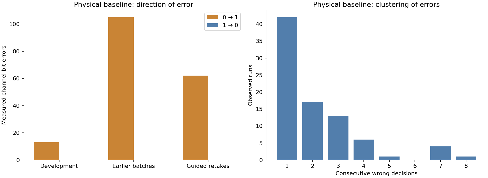
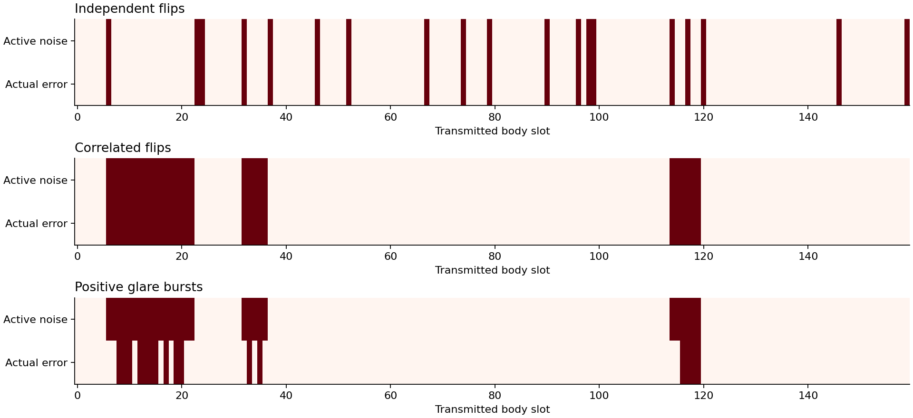
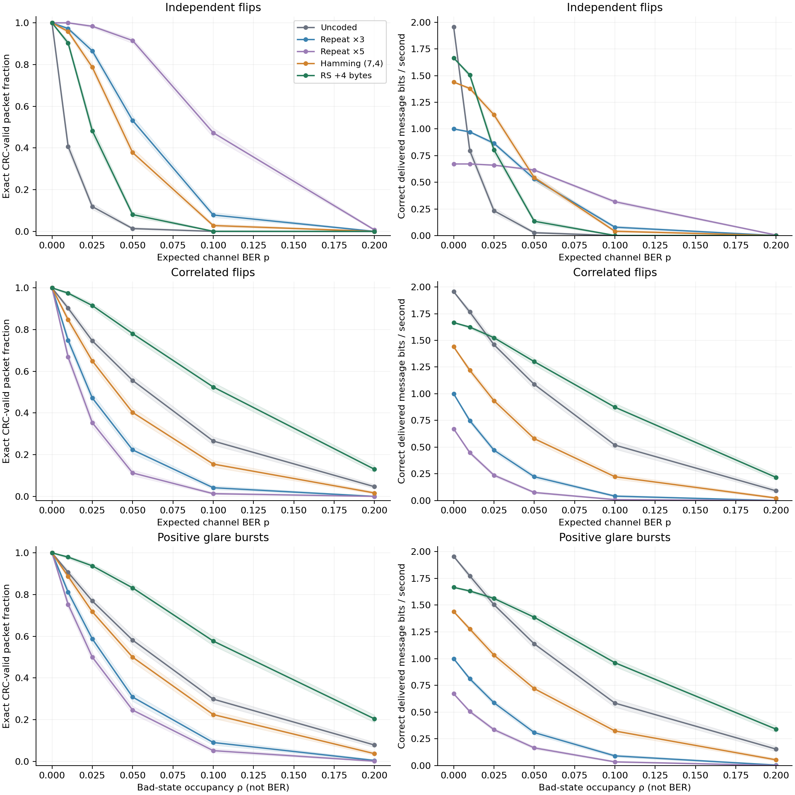
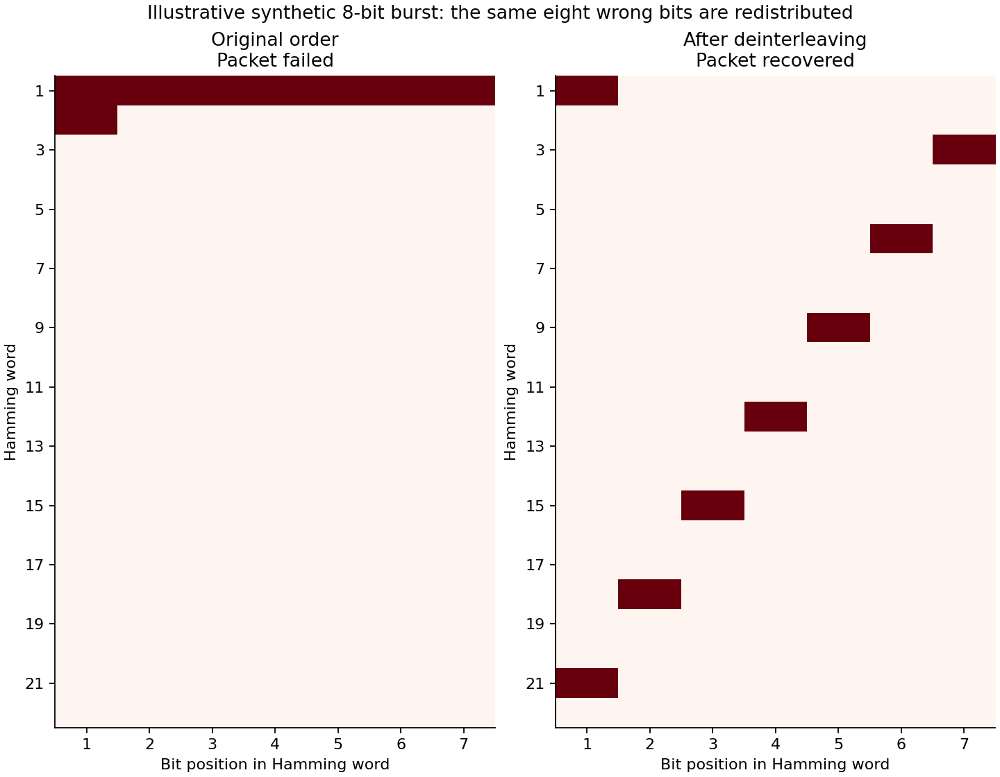
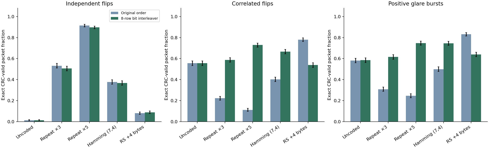
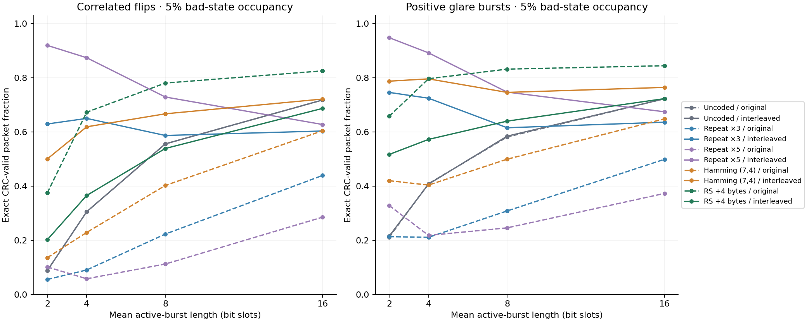

COMP0228 · local analysis · synthetic results explicitly separated from physical evidence
The original receiver made 180 coded-body errors across 30 retained packets: all were zero-to-one changes. The combined physical receiver left 3 channel errors, which the existing codes repaired. Positive illumination is consistent with this direction of error, but exposure adaptation, local reflection and occlusion were not separately isolated.

Consecutive wrong decisions are not the full disturbance duration. A transmitted one can remain correct throughout a bright interference event. The model below is an explanatory stress test, not a statistical fit to these few physical cases.
Each trial uses a uniformly random nine-byte message and its actual protocol checksum. The same payload and sequence ID are reused across codecs and transmission orders. All codes use 200 ms per transmitted bit. Longer codewords experience more channel slots. Noise corrupts the body only; ideal synchronization and header reception are assumed. The 96 overhead slots still count toward total airtime.
For independent flips, each bit changes with probability p. For correlated flips, a stationary two-state process flips every bit in its bad state. With bad-state fraction ρ and mean run L, P(B→G)=1/L and P(G→B)=ρ/[(1−ρ)L]. Positive glare uses that process but forces a one rather than flipping every bit. Its occupancy is not its resulting BER. The symmetric models share nominal BER; glare is reported separately with measured BER.

Six severities (0, 1%, 2.5%, 5%, 10%, 20%) are tested with L=8. The burst models also vary L across 2, 4, 8 and 16 slots at 5% occupancy, reusing the L=8 result. Depth eight and the grid were fixed before outcomes were inspected. Seed 20261024 makes the trials reproducible.
A packet succeeds only if its message is exact and CRC-valid. Failed packets contribute zero useful bits and their full airtime. A rejected decode has no payload BER and remains a packet failure. Shading is a 95% Wilson interval over independent simulated packet trials; useful-rate intervals are the same intervals scaled by the fixed offered payload rate. These intervals do not describe hardware reliability.

The encoded body is written row-wise into eight rows and read down columns. Empty matrix cells are omitted; no padding is transmitted. The receiver restores order before the existing decoder and CRC check. No expected message enters the decoder. The two orders see the same time-domain noise in each trial.

The illustrative eight-bit burst overwhelms one ordinary Hamming word; the permutation spreads it over distinct words. That mechanism does not apply equally to every code. Reed–Solomon corrects erroneous byte symbols, so scattering a short burst across many bytes can worsen decoding. This is a bit interleaver within one packet, not interleaving multiple RS codewords.

Each row contains 2,000 independent synthetic trials. Common seeds pair methods; rows must not be pooled as independent physical evidence. For glare, the 5% parameter is bad-state occupancy rather than BER.
| Code | Transmission order | Recovery (95% CI) | Measured channel BER | Useful bit/s |
|---|---|---|---|---|
| Hamming (7,4) | Original | 37.8% (35.7%–39.9%) | 4.94% | 0.544 |
| Hamming (7,4) | Interleaved | 36.8% (34.7%–38.9%) | 4.94% | 0.530 |
| Uncoded | Original | 1.4% (0.9%–2.0%) | 4.91% | 0.026 |
| Uncoded | Interleaved | 1.4% (0.9%–2.0%) | 4.91% | 0.026 |
| Repeat ×3 | Original | 53.2% (51.0%–55.4%) | 5.00% | 0.532 |
| Repeat ×3 | Interleaved | 50.6% (48.4%–52.8%) | 5.00% | 0.506 |
| Repeat ×5 | Original | 91.5% (90.2%–92.6%) | 5.02% | 0.615 |
| Repeat ×5 | Interleaved | 89.7% (88.3%–91.0%) | 5.02% | 0.602 |
| RS +4 bytes | Original | 8.1% (6.9%–9.3%) | 4.91% | 0.134 |
| RS +4 bytes | Interleaved | 8.9% (7.8%–10.3%) | 4.91% | 0.149 |
| Code | Transmission order | Recovery (95% CI) | Measured channel BER | Useful bit/s |
|---|---|---|---|---|
| Hamming (7,4) | Original | 40.2% (38.1%–42.4%) | 4.96% | 0.580 |
| Hamming (7,4) | Interleaved | 66.7% (64.6%–68.7%) | 4.96% | 0.960 |
| Uncoded | Original | 55.6% (53.4%–57.8%) | 4.98% | 1.088 |
| Uncoded | Interleaved | 55.6% (53.4%–57.8%) | 4.98% | 1.088 |
| Repeat ×3 | Original | 22.3% (20.5%–24.2%) | 4.94% | 0.223 |
| Repeat ×3 | Interleaved | 58.7% (56.5%–60.8%) | 4.94% | 0.587 |
| Repeat ×5 | Original | 11.2% (9.9%–12.7%) | 5.00% | 0.076 |
| Repeat ×5 | Interleaved | 72.9% (70.9%–74.8%) | 5.00% | 0.490 |
| RS +4 bytes | Original | 78.0% (76.2%–79.8%) | 4.89% | 1.301 |
| RS +4 bytes | Interleaved | 53.9% (51.7%–56.1%) | 4.89% | 0.898 |
| Code | Transmission order | Recovery (95% CI) | Measured channel BER | Useful bit/s |
|---|---|---|---|---|
| Hamming (7,4) | Original | 50.0% (47.8%–52.1%) | 2.52% | 0.719 |
| Hamming (7,4) | Interleaved | 74.6% (72.6%–76.5%) | 2.53% | 1.074 |
| Uncoded | Original | 58.1% (56.0%–60.3%) | 2.56% | 1.138 |
| Uncoded | Interleaved | 58.5% (56.3%–60.6%) | 2.55% | 1.144 |
| Repeat ×3 | Original | 30.9% (28.9%–32.9%) | 2.60% | 0.308 |
| Repeat ×3 | Interleaved | 61.6% (59.4%–63.7%) | 2.58% | 0.616 |
| Repeat ×5 | Original | 24.6% (22.8%–26.5%) | 2.61% | 0.165 |
| Repeat ×5 | Interleaved | 74.7% (72.7%–76.6%) | 2.57% | 0.502 |
| RS +4 bytes | Original | 83.2% (81.5%–84.8%) | 2.54% | 1.387 |
| RS +4 bytes | Interleaved | 64.0% (61.9%–66.1%) | 2.56% | 1.067 |

At fixed occupancy, longer mean bursts also occur less frequently. A code can fail on a rare severe burst while many packets avoid any disturbance; average packet success alone does not describe every affected packet. Inspect both the success curves and the error mechanisms.
This permutation adds zero transmitted bits. It buffers a whole coded body; the saved buffer-span metric is the duration of that body at 200 ms per bit. It is not extra airtime or a measured additional decoding delay. The current packet pipeline already waits for a full packet. A physical adaptive interleaver would need agreed settings/protocol signalling, firmware integration and physical validation.
At 5% correlated flips and L=8, Hamming recovery rises from 40.2% to 66.7% with interleaving. RS recovery falls from 78.0% to 53.9%, consistent with spreading damage across more byte symbols. Thus the same permutation has different effects on different coding units.
Under 5% independent flips, ordinary repetition ×5 recovers 91.5%, delivering 0.615 useful bit/s after redundancy and framing. Its strong success fraction has a transmission-time cost. Longer coded packets also spend longer exposed to the burst process; more redundancy is not automatically better in that setting.
The independent-flip simulation was additionally checked against binomial recovery probabilities for all five codecs, for both orders. The numerical checks support implementation correctness under the declared model, not physical-channel validity.
The run retained 1 CRC-valid wrong-payload events as failures; correct delivery always requires an exact match as well as CRC. The live receiver would accept such a message: only the evaluator, which knows the transmitted payload, can identify the undetected error. All decoder rejections remain in the success and useful-rate denominators. Report residual payload BER only alongside its available-output count.
Scope: one payload length; arbitrary binary messages; declared synthetic processes; perfect acquisition/header; fixed clock; no analog camera model; no fit of burst parameters to real recordings. No new physical transmission or real-camera interleaving result is claimed. The physical receiver's 30/30 recovery is specific to the retained dataset; eight development packets influenced its settings and later videos had already been inspected.
Coding_Experiments.ipynb provides the walkthrough. Run All verifies source/data hashes, rebuilds all summary statistics from trial records and replays 720 decodes. An optional cell reruns the entire simulation into a new folder. Existing evidence is preserved; nothing is published.
All condition metrics · Paired rescues and harms · Declared configuration · Validation · Physical evidence provenance · Analytical checks · CRC-valid wrong-message case
The group's final report should distinguish physical coding results, receiver ablation and synthetic interleaving evidence. Use the models to explain successes and failures and the trade-off with transmission rate. The final report, presentation/live demonstration and contribution forms remain separate deliverables.